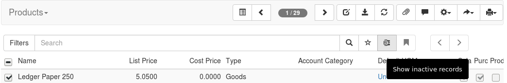
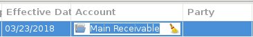
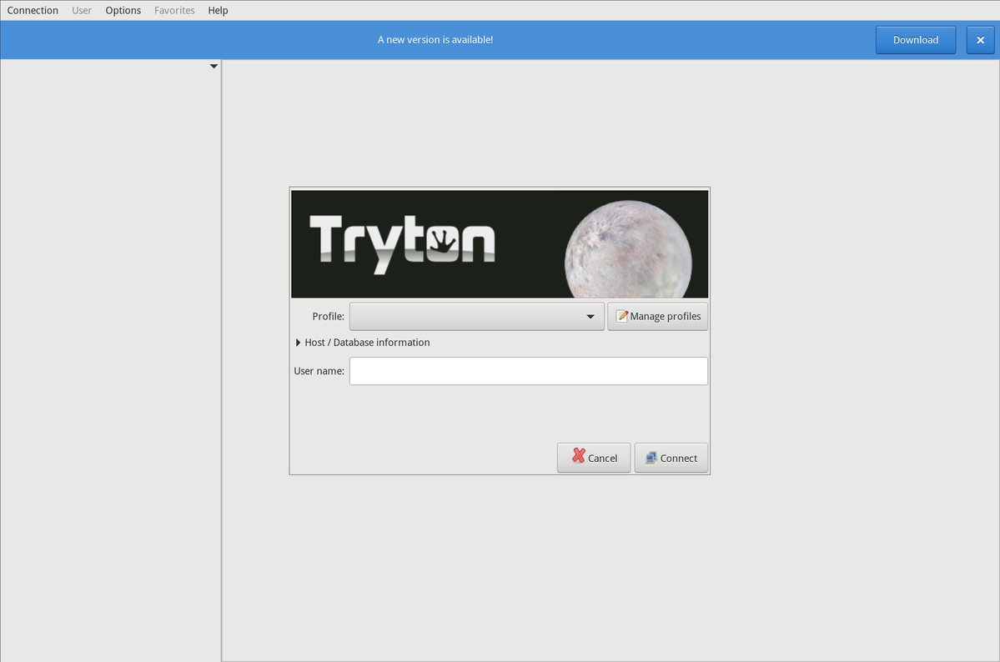
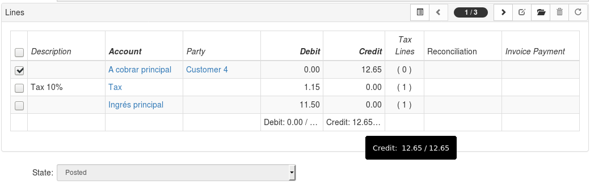
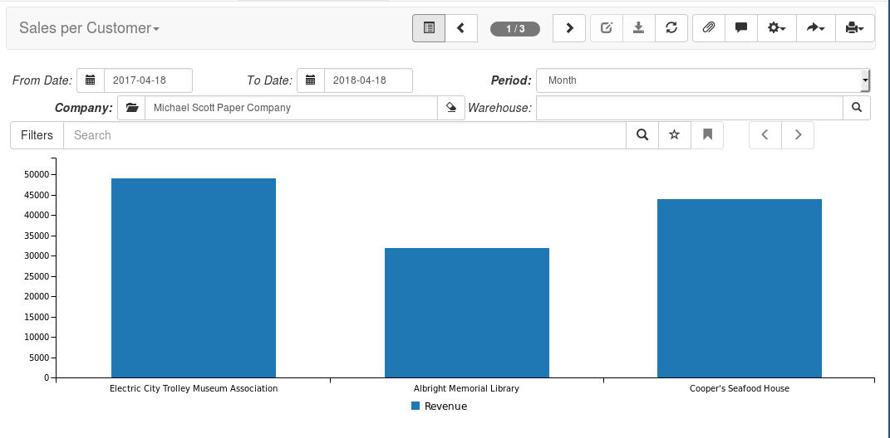

What's new on 4.8?
Available on: http://pokoli.github.io/whats-new-on-tryton-48/
Who am I?
Sergi Almacellas Abellana
- (Python ♥) Programmer
- Open source enthusiast
- Tryton commiter since Nov 2013
Release process
- New Release every 6 months
- x.0 will be LTS releases
- LTS Releases will be supported for 5 years
- 5.0: 1st October 2018
- 5.0: Suported until October 2023
User Interface
Active Widget
User Interface
Many2One fields in editable list
User Interface
- Unaccented searches
Desktop client
Upgrade notification
Web Client
Editable Tree View improved
Web Client
- Format numeric fields
- Label and count possition on lists
- Spell Checking
- Skip button of widgets for fast tabbing
- Sum feature on list
- Many2One as link on tree view
Parties
- Erase wizard for GDPR
- Add name to conatact mechanism
- Contact mechanism usage flag
Product
- Match parent categories
Accounting
- Allow chart template override
- Warning when creating a second chart of accounts
- Open detail on Income Statement
- Allow multiple tax codes per tax
- Tax report on cash basis
Spanish Chart of Accounts
- Removed not needed intermediary accounts
- Tax code to mimic AEAT models (111/115/303)
- Removed too specific taxes
Invoicing
- Optional description, product name is used on report
- Store reconciliation date instead of boolean field
- Raise an error when overpaying an invoice
Payment
- Cron tasks to post clearing move after journal
- Manage stripe dispute statues
Statement
- Add a button to reconcile from statement
- Import OFX file format
Stock
- Show product quantity per template
- Add list of product quantities per location
- Skip inventory step in supplier shipment
Sales & Purhcases
- Optional description, product name is used on report
- Wizard to modify header
- Invoice Paid method on purchase requests or drop shipments
Sale Reporting
Purchase
- Add link to product supplier on purchase line
- Warning when confirm a purchase linked to a request of diferent warehouse
Purchase Request Quotation
- Initiated by Employee
- Approval from a special group
- Using the purchase workflow

Thank you!
The presentation code is avaiable on
http://github.com/pokoli/whats-new-in-tryton-48/